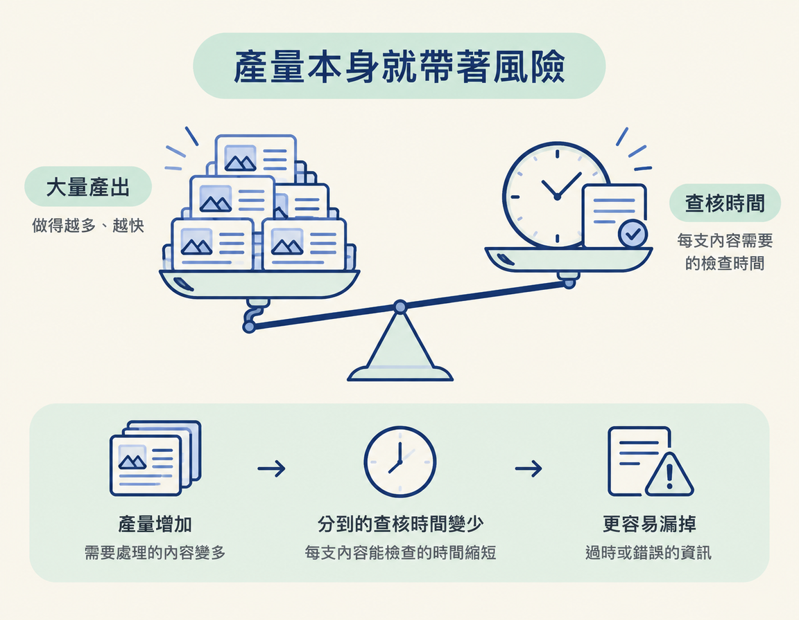
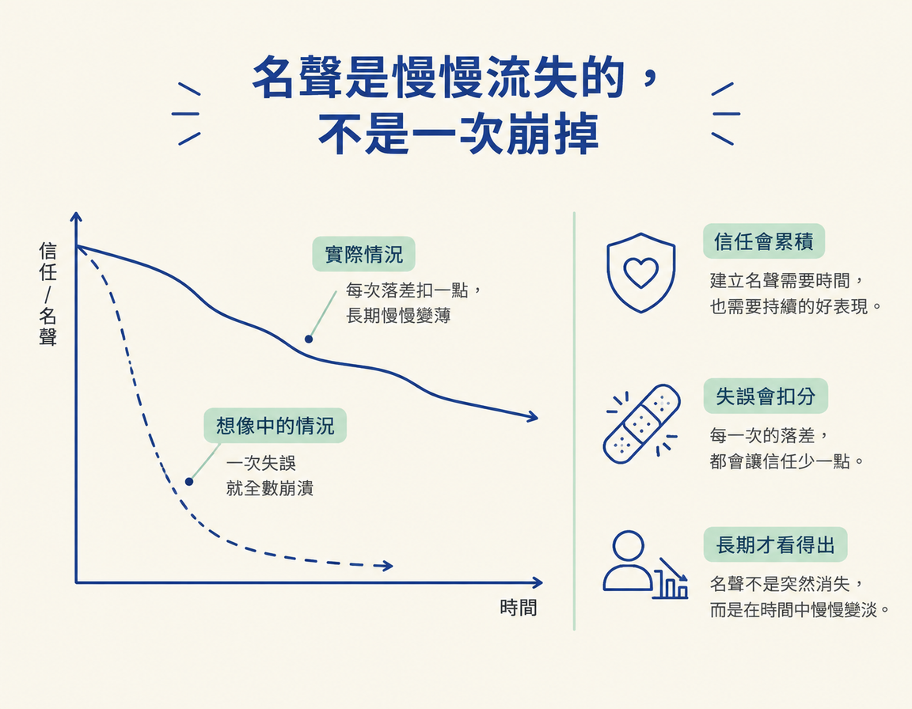

這一節要認出高產量可能帶來的風險：偶爾發布過時或誇大的內容，會讓名聲逐漸受損。你也會釐清新手期有哪些實驗空間，以及走長期經營時，哪些做法需要收斂。
前面三節談過「落差的代價」：內容的包裝是一種承諾，觀眾發現承諾和實際內容不符，信任就會受影響，平台也可能跟著出手。現在來到 Wk3 的這一步，焦點是高產量背後的名聲風險。
Content Pyramid 從增加產量開始，因為產量能推動成長，但發得多，也比較容易有內容沒確認清楚。這一節不是要你少發，而是要你看清楚風險在哪裡：什麼階段可以放心實驗，什麼時候該逐步收斂。
先承認一件事：內容發得多，偶爾就可能失手。產出量一高，總會有幾次沒去確認某支腳本裡的資訊還正不正確、是不是已經過時。某個資訊可能失效了，某個數字也可能已經變了。
這不一定是因為你偷懶，而是產量和查核時間之間的取捨。做得又多又快，就比較難每一支內容都回頭完整查核。先看見這個風險，才有辦法思考怎麼修正。

這裡的重點是保持警覺：知道發得多，就比較容易遇到這類失手，下一次就能多留意。你會逐漸熟悉自己的行業和利基，知道哪些資訊容易過時，也會更清楚哪些說法容易不小心誇大。這些判斷需要一次次累積。
所以，產量帶來的失手，不代表你從此不敢發，而是提醒你持續修正。方向正確、願意調整，比要求自己一次都不出錯更實際。
這一節最重要的一點是：這類失手通常不會讓你一夜之間失去所有觀眾，卻可能「慢慢地、確確實實地」侵蝕名聲。

還記得上一節的爆紅案例嗎？貼文替創作者帶來追蹤數，但觀眾發現方案早已關閉後，這次經驗就會成為他們評價這位創作者的一部分。一次兩次未必看得出影響，累積起來，觀眾就會開始衡量你說的話值不值得相信。
不過，發得多也代表你還有很多機會，繼續做出有趣、實用的內容，慢慢補回信任。重點不是「絕不失手」，而是知道風險存在，也願意持續改進。
那麼，在哪個階段可以放手嘗試？這裡給的範圍是：如果你還是小型創作者，例如有一萬、兩萬名追蹤者，而且主要發布短影音，通常可以多嘗試。你可以試試點擊誘餌的 hook，也就是為了抓住注意力而設計的開場句。也可以試試點擊誘餌標題，看看這些包裝方式的效果。
但有個但書：如果你打算長期經營，這些做法終究需要調整。新手期可以實驗，是因為你還在摸索和學習。一旦決定走長期路線，就要逐漸收回這些實驗。判斷的關鍵不是「能不能用」，而是「你現在是在短期測試，還是在長期累積」。
| 新手期（例：1–2 萬追蹤、主發短影音） | 長期賽局 | |
|---|---|---|
| 點擊誘餌標題 | 可以放手試 | 要慢慢收回 |
| 資料查核 | 偶爾失手還可接受 | 要建立檢查習慣 |
| 名聲成本 | 較低，信任還在累積 | 較高，會被觀眾記住 |
| 心態 | 實驗、學習 | 守住承諾 |
最後，把檢查拉回一個簡單的比例：內容大致可以看成「50% 的 hook，加上 50% 你實際說的話」。也就是說，抓住注意力的開場和後續真正提供的內容，各占一半。發布前確認兩者都是真的：開場沒有誇大，實際內容也符合開場的承諾，基本上就可以放心發布。
高產量不是要你降低標準，而是要你在持續發布的同時，養成簡單的自我檢查習慣：這支內容的 hook 和實際內容，現在還都算數嗎？花一點時間確認，就能降低信任逐漸流失的風險。
發得多，就難免有幾支內容漏了查核，或出現資訊過時、說法誇大的情況。這通常不會讓名聲一次崩掉，卻會慢慢侵蝕信任。新手期的小型創作者若主要發布短影音，可以放手實驗點擊誘餌。但若打算長期經營，就要逐漸收斂，並養成發布前確認 hook 和實際內容都仍然正確的習慣。
看清楚內容落差、平台誘因和高產量風險之後，這條線還有最後一步：你要用什麼態度長期經營信任。下一節會談兩個決定：用詞要多克制，以及要不要露臉。